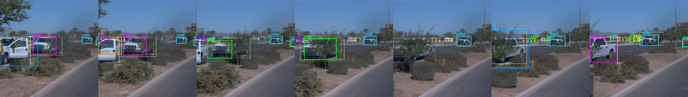
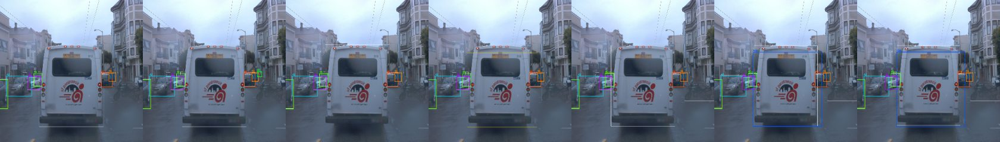
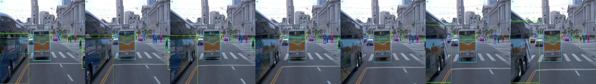

A reproducible perception benchmark for the Waymo Open Dataset
Camera, LiDAR and camera + LiDAR detection under one protocol, an official-metric LiDAR evaluation path, error analysis, and a camera tracking-by-detection baseline with a failure replay. It is a perception experimentation toolkit, not an autonomy stack.
Left: camera detection and tracking (YOLOv8n 640x960 + SORT). Right: LiDAR bird's-eye view, ground truth (green) against CenterPoint predictions (orange). Different models in each panel (not fusion); low-budget baselines. Validation data, 6 seconds, shown for illustration.
Results
Camera detection on the FRONT camera, COCO mAP@[.5:.95] on 10 frozen validation segments (1,967 frames), one RTX 4080 SUPER. Dots are individual seeds, bars are means. Settings are defined in the protocol: S is the small common budget, L has a larger input and more data.
- Setting L beats S on every seed for both models. YOLOv8n goes from 0.084 to a mean of 0.129 (lowest L seed 0.108, highest S seed 0.087); vehicle and pedestrian AP are higher on all seeds, with no latency cost.
- Seed spread is large at L (about 0.05 mAP for YOLOv8n), so differences under that are noise there. At S the spread is 0.005.
- RT-DETR-L is consistently more accurate than YOLOv8n at the same seed but about three times slower. Under the advancement rule (latency within 2x) it does not replace YOLOv8n.
- Adding LiDAR channels to YOLOv8n gives no gain at setting S (0.081 against 0.084).
- Cyclists are not reliably detected. The cyclist AP seen on seed 42 did not repeat on other seeds.
LiDAR models (different metric, setting S, one seed)
| Model | BEV proxy AP | Official 3-D L1 AP (vehicle / pedestrian / cyclist) | Latency |
|---|---|---|---|
| PointPillars | 0.088 | 0.048 / 0.014 / 0 | 405 ms |
| CenterPoint | 0.102 | 0.048 / 0.013 / 0 | 397 ms |
LiDAR scores are a different metric from camera mAP and cannot be ranked against it. Under the official Waymo metric the two LiDAR models tie, so the proxy's ranking of CenterPoint ahead is not supported. See why the official AP is low.
Benchmark protocol (v1.3)
The protocol fixes how every model is trained and scored, so a difference can be attributed to the model and not to the data, budget or metric.
| Setting | Training segments | Camera input | Schedule | Run for |
|---|---|---|---|---|
| S | first 20 of 798 (2.5%) | 512 x 512, squashed | 10 passes over 20 segments | all camera models, fusion, LiDAR |
| S + resolution | first 20 | 640 x 960, aspect kept | 10 passes over 20 segments | YOLOv8n (ablation) |
| L | first 100 of 798 (12.5%) | 640 x 960, aspect kept | 3 passes over 100 segments | YOLOv8n, RT-DETR-L |
- Evaluation: the first 10 sorted validation segments (1,967 frames), frozen in a manifest, disjoint from training.
- Metrics: COCO mAP for camera and fusion. LiDAR has a BEV axis-aligned proxy and the official Waymo 3-D AP and APH (run from saved detections on Linux with the official wheel).
- Advancement rule: a challenger replaces the baseline if it improves mAP by at least 0.02 over YOLOv8n, outside the seed spread, with p95 latency within 2x of the baseline on the same device.
- Seeds: seed 42 for reference runs; the camera models at setting L and YOLOv8n at setting S were repeated with more seeds.
- Known limits: small training budgets; mostly single seeds outside the camera models; camera-only FRONT view; RT-DETR-L has about ten times the parameters of YOLOv8n; fusion and LiDAR were not run at setting L.
What limits performance
- Small objects. 43% of ground-truth objects are smaller than 32 x 32 pixels in the original frame. At setting S YOLOv8n finds 4% of them and RT-DETR-L 12%; squashing 1920 x 1280 frames to 512 x 512 shrinks them 2.5 to 3.75 times. A larger input helps, which is why setting L was run.
- Loose boxes. At setting S, 65% (YOLOv8n) and 53% (RT-DETR-L) of false positives are localization errors, a box on a real object with IoU between 0.1 and 0.5; another 31% and 37% are background boxes.
- Rare classes. Cyclists (453 instances) are essentially never detected reliably; pedestrians are found mainly when medium or large.
- LiDAR 3-D accuracy. Height error, horizontal localisation and a 50 m range limit, not heading (see below).
- Tracking inherits the detector's misses (see below).
Next experiments worth running: RT-DETR-L, fusion and the LiDAR models at more seeds and the larger budget; scoring the official metric within 50 m and a height-weighted LiDAR loss; a shorter track confirmation delay and appearance features to re-link tracks after gaps; more cyclist data.
Camera tracking baseline
A SORT-style tracker (constant-velocity Kalman filter, Hungarian matching on IoU, class-aware) on YOLOv8n detections, scored with MOT metrics against Waymo's persistent camera object ids on the same 10 evaluation segments. Tracker settings were tuned on three held-out validation segments, never on the evaluation set.
| Detector and tracker | MOTA | IDF1 |
|---|---|---|
| YOLOv8n 512 x 512, default tracker | 0.105 | 0.286 |
| YOLOv8n 512 x 512, tuned tracker | 0.166 | 0.307 |
| YOLOv8n 640 x 960 (setting L, seed 42), tuned tracker | 0.054 | 0.327 |
| Box oracle (ground-truth boxes as detections): ceiling of an IoU tracker here | 0.819 | 0.679 |
The better detector raises IDF1 but adds false positives, so MOTA falls. The seed-42 detector used here is the best of three seeds, so its cyclist tracking should not be expected to repeat.
Where tracking fails
Every missed ground-truth box is attributed to a cause: no detection overlaps it (detector), or a detection above the score gate overlaps it but no track covers it (association).
Detector misses dominate, and they are small: the median missed box is 22 to 28 pixels on a side. Association misses are larger boxes (40 to 53 px), some of them track start-up lag. Most vehicle ID switches (421 of 653) happen after the object was lost for more than one frame, which points to appearance features or longer memory, not a better matching rule.



Why the official LiDAR AP is low
Official vehicle AP (0.048) is about a quarter of the BEV proxy (about 0.2). A local analysis of the saved CenterPoint detections found no pipeline bug; the boxes themselves are the problem.
- Height is the main loss. Recall drops from 0.318 in rotated bird's-eye view to 0.114 in rotated 3-D. On matched pairs, using the ground-truth height and vertical size lifts the share reaching IoU 0.7 from 0.21 to 0.58; the ground-truth horizontal centre lifts it to 0.45.
- Heading is minor for AP. The median vehicle heading error is 3.6 degrees. 18 to 20% of headings are flipped by 180 degrees, which affects APH, not AP.
- Range cap. 22% of vehicles lie beyond the 50 m the models can see, capping recall near 78%.
- Precision is poor: about 31 vehicle predictions per frame against 20.5 ground-truth vehicles, and every cyclist prediction scores below 0.3.
- The wiring looks right: an independent replica of the official matching gives vehicle AP 0.053 against 0.048 reported, and reproduces the proxy exactly. The cause of the height noise (pillar features have no vertical resolution) is an inference, not tested.
Reproducibility
Checked from a fresh clone, a new Python 3.12 environment and an empty data cache.
| Step | Result |
|---|---|
| Install requirements | Works in 38 s with a warm pip cache. |
| Smoke training | Completes in about 6 minutes, nearly all first-time data download. |
| Re-evaluate the 640 x 960 checkpoint | mAP 0.15669 against 0.15661 recorded (Apple GPU against CUDA). |
| Tracking with the tuned settings | MOTA 0.0537, IDF1 0.3265, 650 vehicle ID switches: identical to the recorded run. |
Not reproduced: training from scratch, LiDAR training and the official evaluator, the fusion model. The model architecture can depend on the Ultralytics version (the reference runs used 8.4.198), so use the version of the original runs when retraining.
git clone https://github.com/KushalBKusram/WaymoOpenDatasetToolKit
cd WaymoOpenDatasetToolKit
python3.12 -m venv .venv && source .venv/bin/activate
pip install -r docs/requirements-tested.txt
gcloud auth application-default login # read access to the public Waymo bucket
python evaluate.py --config configs/yolov8n_hires_100.yaml --run-dir runs/yolov8n_hires_100-v1.2-s42Model weights
YOLOv8n at 640 x 960, setting L, seed 42 (mAP 0.157; the best of three seeds, so expect about 0.13 from a retrained model). A weights-only file of 12.7 MB that loads with torch.load(..., weights_only=True).
SHA-256: af3cd3bea8803b68d8432049a207281d67642cad10a20ba55e988943a1e3ad5f
import cv2, torch, yaml
from models import build_detector
cfg = yaml.safe_load(open("configs/yolov8n_hires_100.yaml"))
cfg["resume_weights"] = "yolov8n_hires_100-v1.2-s42.weights.pt"
detector = build_detector(cfg)
model = detector.build_model(cfg, torch.device("cpu")).eval()
for det in detector.predict(model, cv2.imread("frame.jpg"), cfg): # BGR image
print(det["box"], det["label"], det["score"])Non-commercial. These weights are released under the Waymo Dataset License Agreement for Non-Commercial Use, and any further use or modification is subject to it, including its restrictions on use in vehicle operation, production systems and primarily commercial purposes. A copy of the agreement is attached to the release.
License and attribution
- Code: GNU AGPL v3.
- Model weights: Waymo Dataset License Agreement for Non-Commercial Use (also derived from Ultralytics YOLOv8 pretrained weights, AGPL-3.0).
This software and the model weights were made using the Waymo Open Dataset, provided by Waymo LLC under the Waymo Dataset License Agreement for Non-Commercial Use, available at waymo.com/open/terms, and your access and use of such work are governed by the terms and conditions therein. The dataset and the example frames shown here belong to Waymo.
@misc{waymo_open_dataset,
title = {Waymo Open Dataset: An autonomous driving dataset},
website = {\url{https://www.waymo.com/open}},
year = {2019-2025}
}